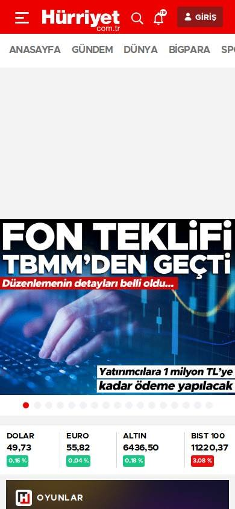
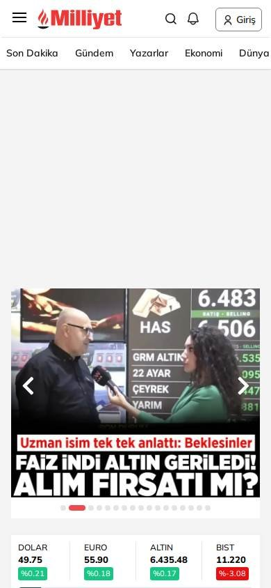

Turquía
Cambiar consultaSitio informativo o de noticias
Los seleccionados
Los tres sitios más visitados de Turquía, según estadísticas de tráfico.
En resumen: lo que hacen los líderes
Estilo visualEstilo tabloide: rojo dominante, fotos grandes con titulares en mayúsculas gruesas y mucha publicidad.HeaderLos tres usan logo rojo y una franja roja de últimas noticias debajo del header.Primera pantallaTitulares enormes en mayúsculas y letra muy gruesa, sobre fotos, al estilo tabloide. Mucha publicidad alrededor.
La pantalla de inicio de cada uno


Foto en camino
Estilo visual
Colores, imágenes, tipografía y cuánta información muestran.
Recomendación
Tu estilo visual debería…
- Si tu público es turco, titulares gruesos en mayúsculas sobre fotos: es la convención local.
Lo que tienen en común: Estilo tabloide: rojo dominante, fotos grandes con titulares en mayúsculas gruesas y mucha publicidad.
La paleta de cada uno
Medida sobre la primera pantalla. Los colores de marca salen del header; el resto muestra cuánto espacio ocupa cada color.
Hürriyet
Colores de marca
85 % de la pantalla en blanco, gris o negroMilliyet
Colores de marca
53 % de la pantalla en blanco, gris o negroSabah
Colores de marcaSin color: blanco y negro
72 % de la pantalla en blanco, gris o negroAsí lo resuelve cada uno
Ficha comparativa
| Aspecto | Hürriyet | Milliyet | Sabah |
|---|---|---|---|
| Paleta | Variada: rojo + colores de publicidad | Variada: rojo, amarillo, negro | Variada: rojo + colores de publicidad |
| Imágenes | Fotos grandes en collage | Fotos grandes con texto encima | Fotos grandes con texto encima |
| TipografíaIgual en todos | Mayúsculas muy gruesas | Mayúsculas muy gruesas | Mayúsculas muy gruesas |
| DensidadIgual en todos | Muy alta | Muy alta | Muy alta |
Header
La franja de arriba con el logo y los accesos.
Recomendación
Tu header debería…
- Logo y franja de últimas noticias en rojo.
Lo que tienen en común: Los tres usan logo rojo y una franja roja de últimas noticias debajo del header.
Así lo resuelve cada uno
Ficha comparativa
| Aspecto | Hürriyet | Milliyet | Sabah |
|---|---|---|---|
| FondoIgual en todos | Blanco | Blanco | Blanco |
| LogoIgual en todos | Rojo, a la izquierda | Rojo, a la izquierda | Rojo, a la izquierda |
| Franja de último momento | Sí, roja | Sí, roja («SON HABERLER») | Sí, roja |
Primera pantalla
Lo primero que se ve debajo del header.
Recomendación
Tu primera pantalla debería…
- Si tu público es turco, titulares grandes en mayúsculas y letra gruesa sobre la foto: es la convención local.
Lo que tienen en común: Titulares enormes en mayúsculas y letra muy gruesa, sobre fotos, al estilo tabloide. Mucha publicidad alrededor.
Así lo resuelve cada uno
Ficha comparativa
| Aspecto | Hürriyet | Milliyet | Sabah |
|---|---|---|---|
| Formato | Collage de fotos con titulares enormes | Foto grande con titular enorme en mayúsculas | Foto grande con titular enorme en blanco y rojo |
| Tipografía | Mayúsculas, muy gruesa | Mayúsculas, muy gruesa, amarillo y blanco | Mayúsculas, muy gruesa, blanco y rojo |
| Publicidad | Mucha, arriba y a los costados | Mucha | Mucha, a los costados |